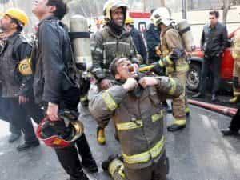

Quintus can be found at qcurtius.com. He is the author of the books On Duties, Thirty Seven, Sallust: The Conspiracy Of Catiline And The War Of Jugurtha, and other books. His work has been reviewed at Taki's Magazine. He can be followed on Twitter


Every now and then you come across a story that cries out for more recognition. I recently had that feeling when I began to read more about the epidemic of firefighter suicides, which is part of the larger problem of untreated firefighter PTSD and depression nationwide. Like many traditionally masculine professions, firefighters and their health problems do not get the same level of attention from the media that is devoted to female, child, and reproductive health issues.
But by any standard, there is a serious problem with untreated depression and suicide among firefighters. The public does not often realize that firefighters deal with the absolute worst kinds of situations every day: the job is not just about putting out fires. They deal with gruesome car accidents, shootings, drownings, and all manner of human catastrophes. Former firefighter Jeff Dill, who runs the Firefighter Behavioral Health Alliance, believes that in 2014 alone, the total number of firefighters who committed suicide nationwide stood at about 350.
They are three times more likely to die by suicide than in the performance of their jobs. The problem is somewhat similar to the issues facing military veterans. But where the military has a relatively extensive and established support system to deal with PTSD issues (the Veterans’ Administration has gotten much better since the 1990s), firefighters have little or nothing.
When I say “stood at about” I mean that we actually don’t know what the real number is. At the time of writing, there is no national database to track firefighter suicides. Why? Because—and I was not that surprised to find this out—the federal government is not interested in keeping track of this data. It is not important enough for them to make the effort. What other explanation could possibly suffice? The National Fallen Firefighters Foundation (NFFF) was created in the 1990s, and one would think that this would be the organization to track this sort of information. But it is just another one of Congress’s unfunded mandates; they do not have a budget. The NFFF handles public relations issues like memorials for fallen firefighters, but they do not recognize firefighter suicides. According to Jeff Dill, only about 30 percent of such suicides are even reported to any agency.
What does this tell us? It tells us that society does not consider such information important. We can see it as part of the current social trends that seek to devalue, denigrate, or ignore legitimate male health issues. Firefighters, policemen, factory workers, fishermen, lumberjacks, cooks, cab drivers, and a hundred other traditionally male occupations suffer in silence, their legitimate voices ignored or suppressed in favor of other “health priorities.” There still is a pervasive stigma in talking about the depression and mental health issues of firemen (am I even allowed to use the word “fireman” any more?). Many such deaths are classified by their own departments as “deaths in the line of duty” or put into the “other” category.

Part of the problem may also be due to the tight nature of the firefighter profession. Even when they do try to get help from mental health professionals, they quickly realize that the “counselor” may not be familiar (or want to become familiar) with their terminology, occupational hazards, or organizational culture. So they may abandon treatment after a few sessions. Many firefighters may not wish to talk to their peers about their anxiety and depression, for fear of appearing unstable and not “up to the job.” So problems fester without resolution. Problems are “treated” with a combination of alcohol, gambling, or other forms of high-risk behavior. Guilt can also factor into the equation. Some commanders simply cannot deal with losing men on the job. Jeff Dill, in one of his interviews, talked about an incident where an officer left behind a suicide note explaining that he could not deal with the loss of two men that happened under his command.
What can be done to solve the problem? The first step needs to be governmental recognition of the problem. Just as reproductive health and women’s health issues are given lavish attention by the media, there need to be at least some financial resources focused on the firefighter suicide problem. Firemen don’t ask for much, but they do deserve recognition for their sacrifices. Of all the billions of dollars doled out by the federal government to big business, defense contractors, and hundreds of other special interest groups, could it not find a tiny bit of funding for those who protect local communities?
It all comes down to priorities. And by deciding who to fund and who to defund, governments tell their people what they value and who they value. With some funding, local firefighters could establish better employee assistance programs, set up psychological counseling networks, look into chaplaincy programs. Firefighting schools could also devote more time to teaching students how to deal with the psychological pressures of the job. For too long, the public has been led to believe that “supporting” firefighters consists of watching myth-making movies about them, wearing their t-shirts, and then walking away and doing nothing else. Such token public relations gestures do nothing to solve the real problems of mental health and suicide prevention: what is needed is allocation of governmental resources and the taking of real action.
Read More: The Rising Epidemic Of Men Falsely Claiming To Be Veterans